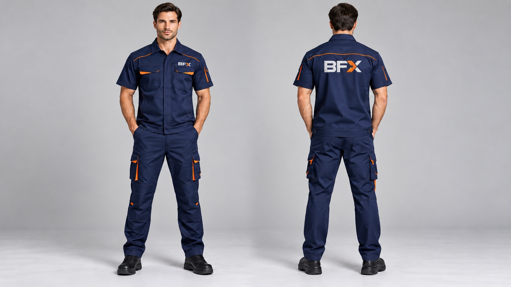
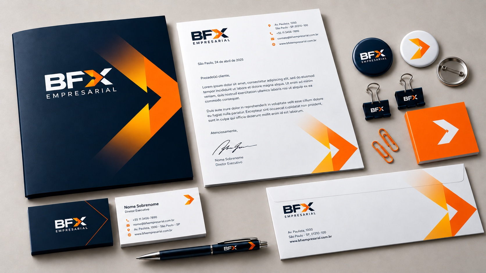

logo-bfx-light.svg
Guia de estilo
BFX Empresarial / Manual de campo
O sistema visual
em movimento.
01
Identidade
Marca em contexto.

logo-bfx-dark.svg
logo-bfx-horizontal-light.svg
logo-bfx-horizontal-dark.svg
favicon.svg
Uso recomendado. Preserve a área de respiro do símbolo e não aplique sombras, contornos ou distorções. A seta laranja é o ponto de energia da assinatura. Baixar logo PNG ↓
Versões monocromáticas
Assinaturas de uma única cor para aplicações que não suportam o acabamento original.
logo-bfx-mono-dark.svg
logo-bfx-mono-light.svg
logo-bfx-horizontal-mono-dark.svg
logo-bfx-horizontal-mono-light.svg
02
Animações e interações
Energia que orienta.
Movimento com função: destacar a marca, orientar a navegação e dar ritmo sem competir com o conteúdo.
Hero / transição
Progresso contínuo.
A linha laranja preenche toda a duração da cena e reinicia no próximo ciclo.
Cards / entrada + loop
ManutençãoGestão predialProjetos
Ritmo em sequência.
Os cards entram da esquerda para a direita quando a seção aparece.
Botão / loop + hover
Glow em slide.
Passe o mouse para ver o brilho atravessar o botão por dentro.
Imagem / hover
 Ver imagem
Ver imagem
Ver imagemImagem em foco.
Passe o mouse para ampliar, escurecer e revelar a seta de interação.
Imagem / cursor

Seta que acompanha.
Mova o cursor sobre a imagem para posicionar a seta e alterar levemente sua rotação.
Imagem / parallax

Profundidade em movimento.
O deslocamento suave da imagem acompanha o ponteiro e cria profundidade no CTA.
Logo / hover do hero
Seta em destaque.
Passe o mouse sobre o logo para recuar a assinatura e revelar a seta laranja.
03
Tipografia
Clareza com presença.
Display / 800 / -4%FamíliaMontserrat
Pesos400 · 500 · 600 · 700 · 800
UsoTítulos, interface e comunicação
H1 / HeroManutenção e gestão predial
clamp(42px, 6vw, 76px)H2 / SectionSeu patrimônio precisa continuar funcionando.
clamp(32px, 4vw, 56px)Body / 16px
Texto de apoio com leitura confortável, ritmo generoso e contraste alto.
1.6 line-heightUtility / 12pxGESTÃO E TECNOLOGIA · LABELS E METADADOS
0.12em tracking
04
Cores
Contraste que orienta.
#08192BBase / confiança#0F2740Superfícies / gestão#FF7A00Ação / energia#FF9A1FHover / destaque#FFFFFFRespiro / conteúdo#EEF1F4Divisores / campos
05
Fotografia
Operação em primeiro plano.
A fotografia BFX combina arquitetura, luz de fim de dia e pessoas em ação. O patrimônio aparece como cenário; o cuidado técnico, como protagonista.
01
Presença e arquitetura
Cenários que sustentam a operação.
Imagens institucionais para apresentar a escala, o ambiente e a assinatura visual da BFX.

02
Soluções e gestão
Pessoas em movimento.
Registros para comunicar manutenção, gestão predial, projetos e serviços terceirizados.


03
Manutenção técnica
Cuidado em cada detalhe.
Biblioteca de serviços para ilustrar precisão, prevenção e continuidade operacional.


Preferir luz lateral, reflexos e profundidade.Evitar banco de imagem genérico e saturação excessiva.
06
Aplicações
Uniformes BFX.
Referências de uniforme para reforçar a presença da marca em cada ponto de contato da operação.





07
Assinatura de e-mail
Presença em cada envio.
Preencha os dados, confira o preview e copie a assinatura formatada para colar no seu aplicativo de e-mail.
PreviewCompatível com Gmail e Outlook